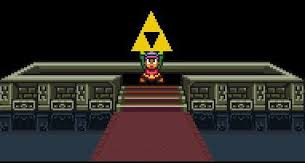
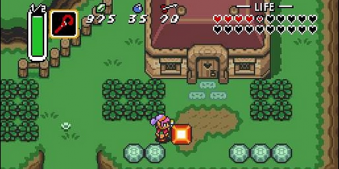

Zelda
Née en 1986 de l'esprit de Shigeru Miyamoto, the Legend of Zelda est un jeu d'action-aventure connu pour ses élements caractéristiques (carte, boussole, grappin, rubis, flèche, bouclier) et pour ses musiques marquantes.
Le joueur sera amené à résoudre des énigmes et a explorer des temples/donjons pour sauver la princesse Zelda et abattre Ganondorf, le Seigneur du Mal. On peut citer "Zelda A link To The Past" sorti en 1992.
Une grand majorité de gens confonde Zelda (la princesse qu'il faut sauver) à Link (le personnage jouable du jeu). Ce jeu comptabilise à lui seul 15 records.
Lien des articles :
- Zelda Wiki
- Palais de Zelda
- Zelda A Link To The Past

